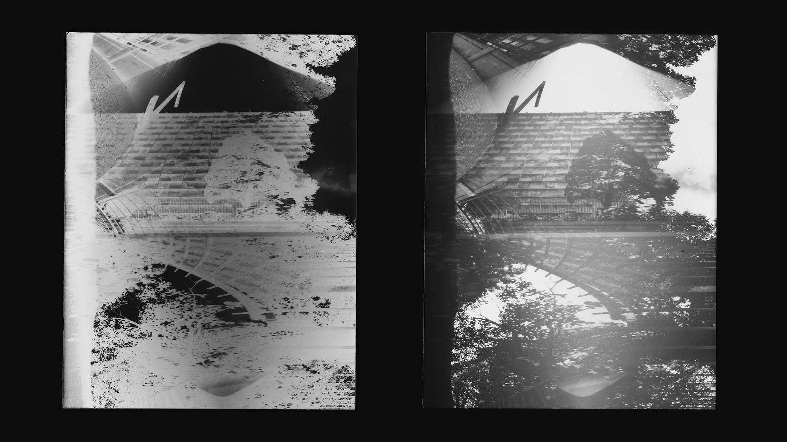
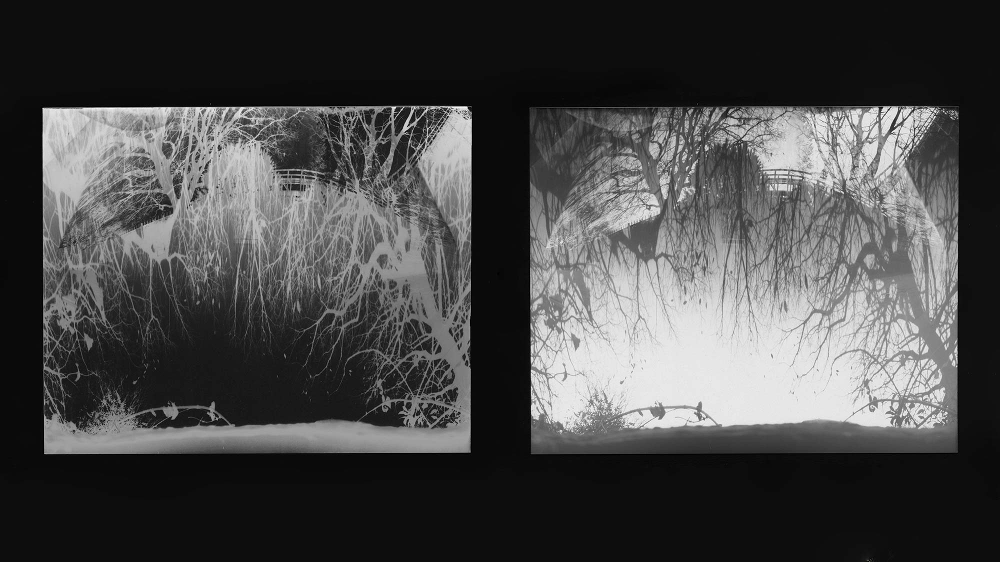
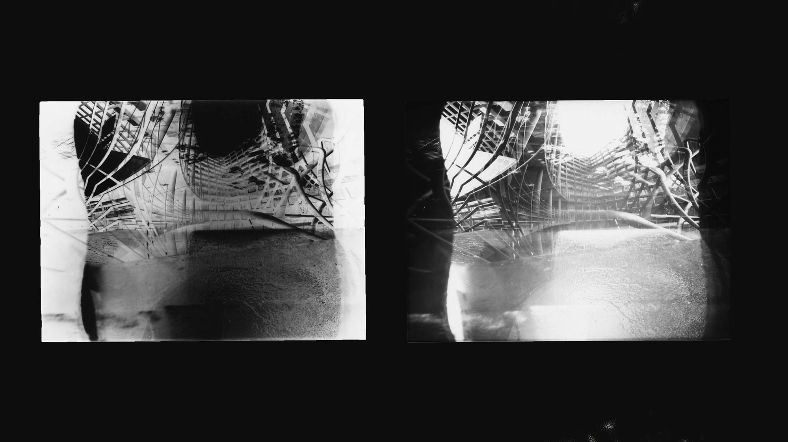
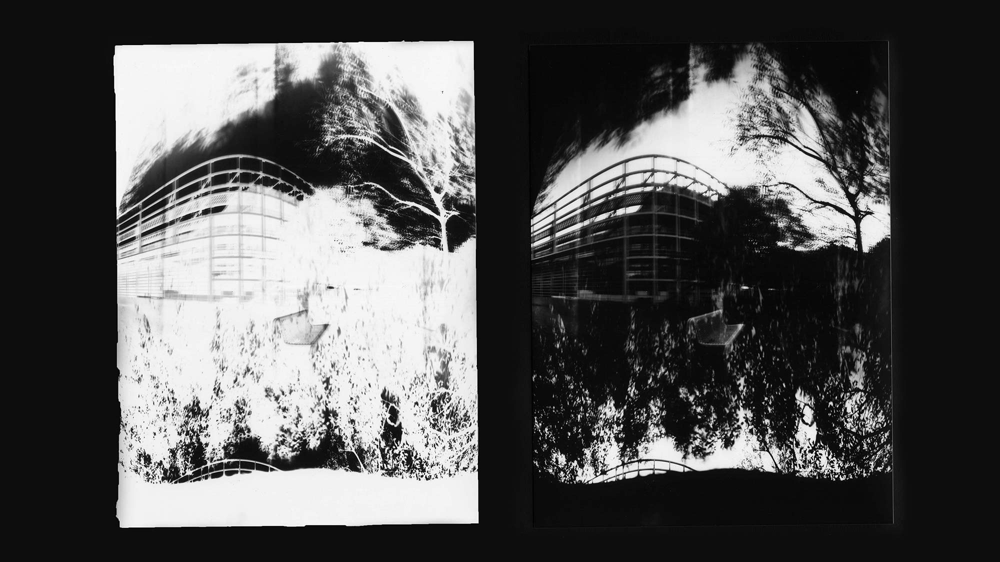
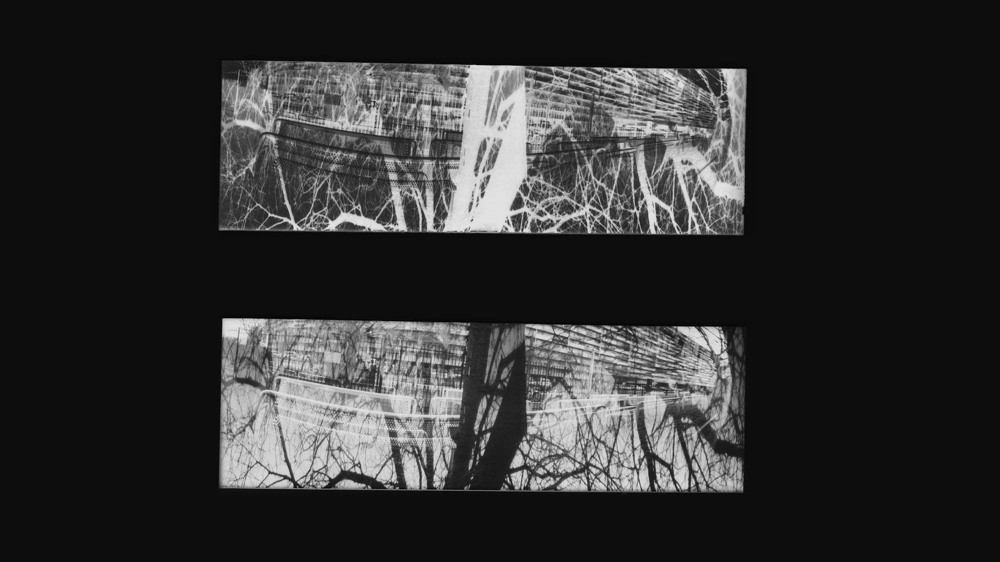
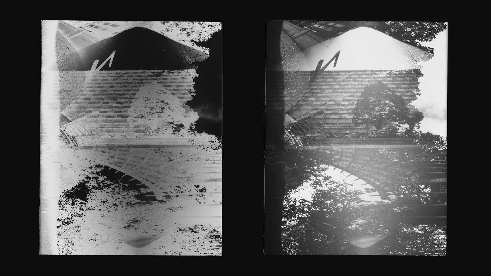
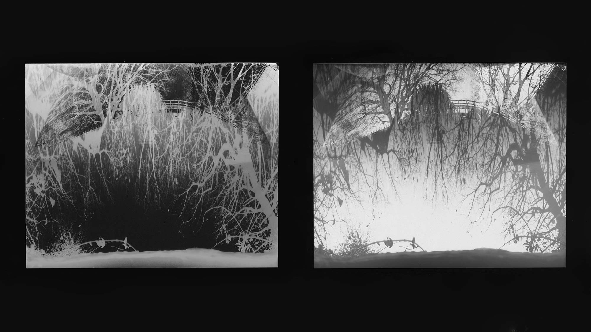
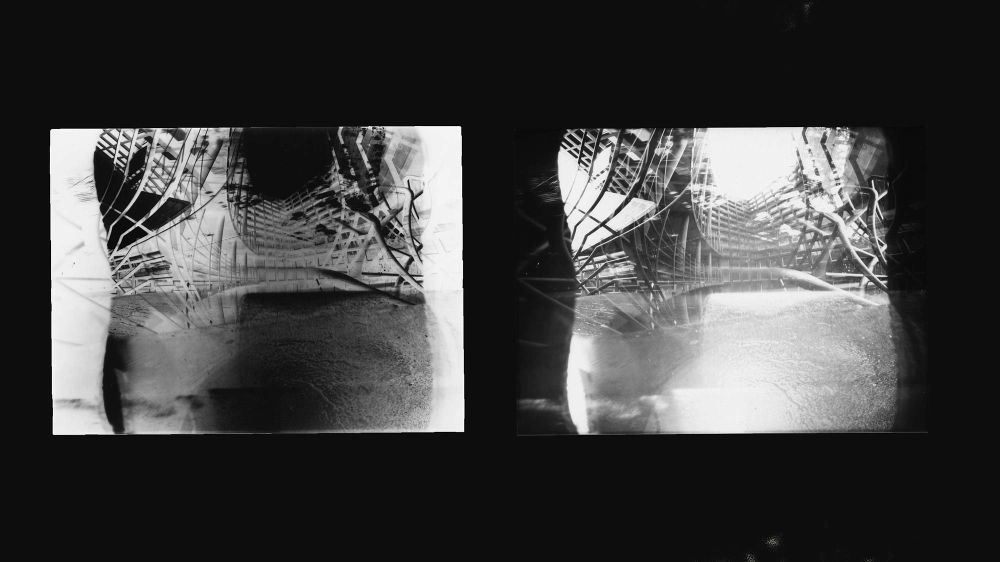
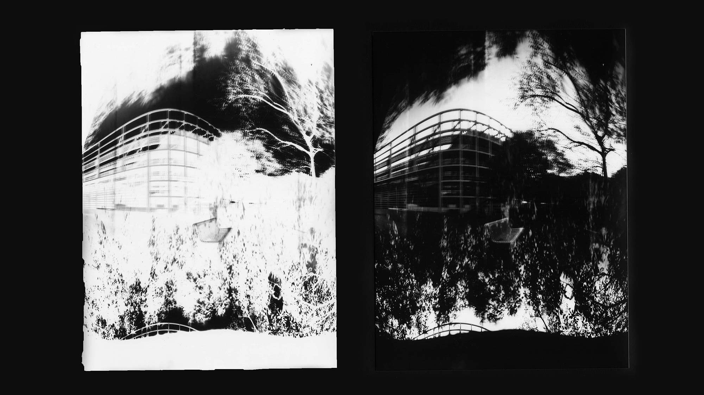
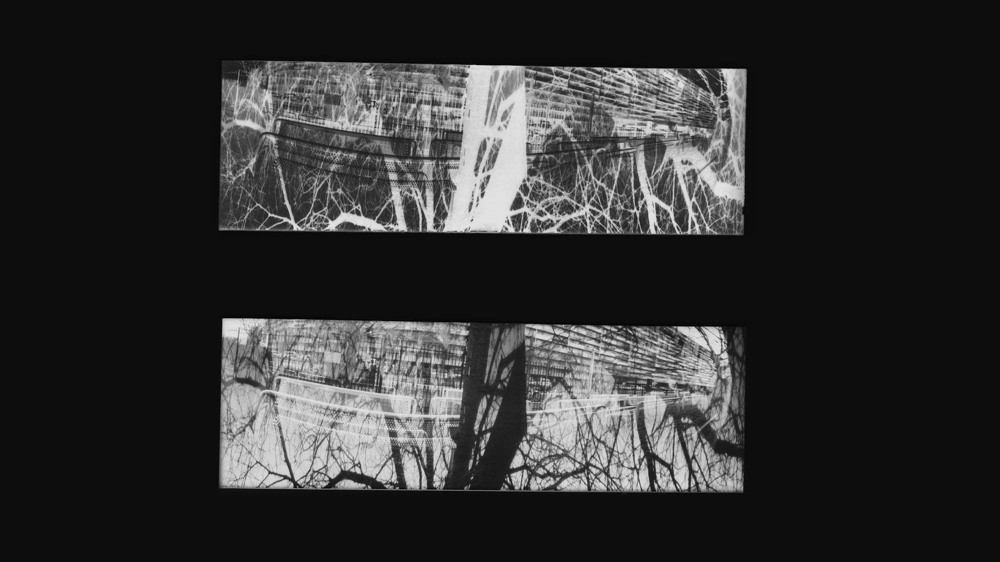

BELLES RENCONTRESatelier encadré
(2022)
photographieédition
L’atelier sténopé a permis de découvrir et de s’approprier ce processus photographique si particulier. Cette technique se base sur la construction de la machine, proposant trois points de vue sur papier argentique photosensible noir et blanc. Cela donne à voir des images où le paysage est déformé, avec un jeu de superpositions et où, une rencontre entre les trois points de vue se crée. Étant difficile de se projeter les images finales, les confrontations visuelles deviennent d’autant plus surprenantes et fortes. La perception des lieux capturés devient changée et plus énigmatique. Cette série photographique propose une nouvelle vision de la ville, là où la végétation est remise en valeur dans un environnement de béton.
 








